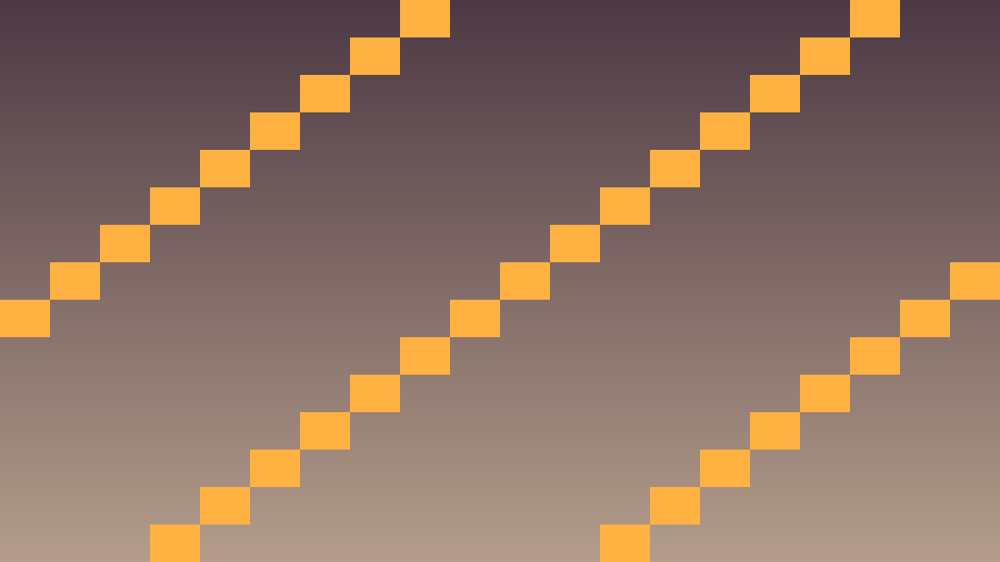
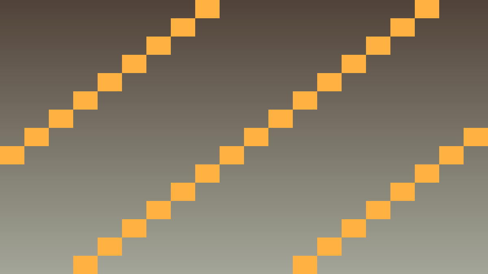

Stundas uzdevums: Pilnvērtīga procedurālā klases labirinta spēle ar procedural generation, save sistēmu un meta-progress.
Pirms sāc: izmanto iepriekš apgūto un šīs lapas teorijas/koda piemērus. Ja vajadzīga jauna komanda vai rīks, vispirms atrodi tās paraugu teorijas sadaļā.
Procedurālais klases labirints: spēlētājs iziet cauri nejauši ģenerētiem labirintiem, savāc bonusa materiālus, risina šķēršļus, kļūdas gadījumā zaudē konkrētā mēģinājuma progresu (run), bet meta-progress (kopējie XP, atklātās klases) saglabājas.
Galvenās funkcijas:
Atceries: ar redzamu efektu editorā nepietiek. Paskaidro, kura C++ klase glabā stāvokli, kura metode to maina un kā Godot node struktūra izmanto šo kodu.
Pārbaudi: C++ kods pārbauda failu kļūdas, validē datus, izmanto versijas lauku un pamato algoritmu sarežģītību.
#include <godot_cpp/variant/string.hpp>
using namespace godot;
struct PersistenceCheckpoint {
String lesson = "5.6 Noslēguma projekts: Procedurālais klases labirints";
bool uses_cpp = true;
bool handles_missing_file = true;
bool validates_data = true;
bool documents_complexity = true;
};Šis ir īss iesildīšanās uzdevums. Nokopē sagatavi, ielīmē to pareizajā koda vietā un palaid. Šeit pietiek droši izmēģināt tēmu 5.6 Noslēguma projekts: Procedurālais klases labirints; detalizētu izpratni veidosi nākamajos uzdevumos.
Kopējamais piemērs vai sagatave: izmanto šo bloku kā starta punktu, nevis kā gala risinājumu.
#include <godot_cpp/variant/string.hpp>
using namespace godot;
struct PersistenceCheckpoint {
String lesson = "5.6 Noslēguma projekts: Procedurālais klases labirints";
bool uses_cpp = true;
bool handles_missing_file = true;
bool validates_data = true;
bool documents_complexity = true;
};.cpp vai .hpp failā pie šīs stundas klases.Pievieno šīs stundas paņēmienu kā nelielu, strādājošu spēles mehānikas daļu.
PlayerState, velocity, score vai update_ui()._ready(), _process(), _physics_process(), signāla apstrādātāja vai projekta palīgklases.Pārbaudi, vai C++ algoritms darbojas paredzami spēles vidē.
Ja pamatdarbs ir pabeigts, paplašini spēli ar vienu nelielu C++ uzlabojumu.


class GameSession : public Node {
GDCLASS(GameSession, Node)
private:
int current_level = 1;
Player* player;
MazeGenerator gen;
public:
void start_run() {
gen.generate(Time::get_singleton()->get_unix_time_from_system());
spawn_player();
spawn_obstacles();
spawn_bonus_items();
}
void on_run_failed() {
// Save meta-progress
MetaProgress::instance()->add_run({current_level, player->solved_tasks});
MetaProgress::save();
// Remove run save
FileAccess::remove("user://current_run.json");
get_tree()->change_scene_to_file("res://menu.tscn");
}
void on_level_complete() {
save_run(); // autosave
current_level++;
if (current_level > 10) on_game_won();
else start_next_level();
}
};